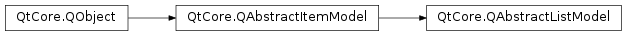

QAbstractListModel¶
Inherited by: QStringListModel, QHelpIndexModel
Detailed Description¶
The
PySide2.QtCore.QAbstractListModelclass provides an abstract model that can be subclassed to create one-dimensional list models.
PySide2.QtCore.QAbstractListModelprovides a standard interface for models that represent their data as a simple non-hierarchical sequence of items. It is not used directly, but must be subclassed.Since the model provides a more specialized interface than
PySide2.QtCore.QAbstractItemModel, it is not suitable for use with tree views; you will need to subclassPySide2.QtCore.QAbstractItemModelif you want to provide a model for that purpose. If you need to use a number of list models to manage data, it may be more appropriate to subclassPySide2.QtCore.QAbstractTableModelinstead.Simple models can be created by subclassing this class and implementing the minimum number of required functions. For example, we could implement a simple read-only
PySide2.QtCore.QStringList-based model that provides a list of strings to aPySide2.QtWidgets.QListViewwidget. In such a case, we only need to implement thePySide2.QtCore.QAbstractItemModel.rowCount()function to return the number of items in the list, and thePySide2.QtCore.QAbstractItemModel.data()function to retrieve items from the list.Since the model represents a one-dimensional structure, the
PySide2.QtCore.QAbstractItemModel.rowCount()function returns the total number of items in the model. ThePySide2.QtCore.QAbstractListModel.columnCount()function is implemented for interoperability with all kinds of views, but by default informs views that the model contains only one column.
Subclassing¶
When subclassing
PySide2.QtCore.QAbstractListModel, you must provide implementations of thePySide2.QtCore.QAbstractItemModel.rowCount()andPySide2.QtCore.QAbstractItemModel.data()functions. Well behaved models also provide aPySide2.QtCore.QAbstractItemModel.headerData()implementation.If your model is used within QML and requires roles other than the default ones provided by the
PySide2.QtCore.QAbstractItemModel.roleNames()function, you must override it.For editable list models, you must also provide an implementation of
PySide2.QtCore.QAbstractItemModel.setData(), and implement thePySide2.QtCore.QAbstractListModel.flags()function so that it returns a value containingQt.ItemIsEditable.Note that
PySide2.QtCore.QAbstractListModelprovides a default implementation ofPySide2.QtCore.QAbstractListModel.columnCount()that informs views that there is only a single column of items in this model.Models that provide interfaces to resizable list-like data structures can provide implementations of
PySide2.QtCore.QAbstractItemModel.insertRows()andPySide2.QtCore.QAbstractItemModel.removeRows(). When implementing these functions, it is important to call the appropriate functions so that all connected views are aware of any changes:
- An
PySide2.QtCore.QAbstractItemModel.insertRows()implementation must callPySide2.QtCore.QAbstractItemModel.beginInsertRows()before inserting new rows into the data structure, and it must callPySide2.QtCore.QAbstractItemModel.endInsertRows()immediately afterwards.- A
PySide2.QtCore.QAbstractItemModel.removeRows()implementation must callPySide2.QtCore.QAbstractItemModel.beginRemoveRows()before the rows are removed from the data structure, and it must callPySide2.QtCore.QAbstractItemModel.endRemoveRows()immediately afterwards.Note
Some general guidelines for subclassing models are available in the Model Subclassing Reference .
-
class
PySide2.QtCore.QAbstractListModel([parent=nullptr])¶ Parameters: parent – PySide2.QtCore.QObjectConstructs an abstract list model with the given
parent.
© 2018 The Qt Company Ltd. Documentation contributions included herein are the copyrights of their respective owners. The documentation provided herein is licensed under the terms of the GNU Free Documentation License version 1.3 as published by the Free Software Foundation. Qt and respective logos are trademarks of The Qt Company Ltd. in Finland and/or other countries worldwide. All other trademarks are property of their respective owners.